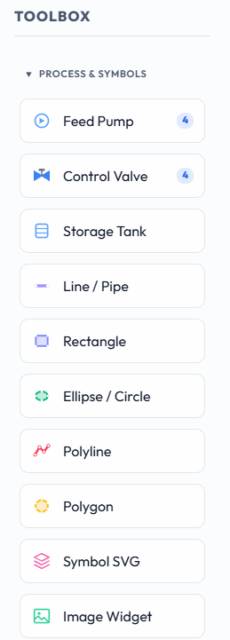
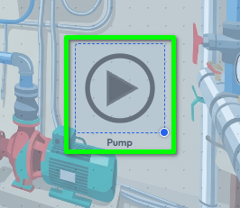
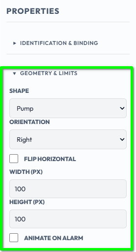
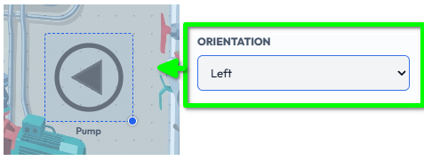
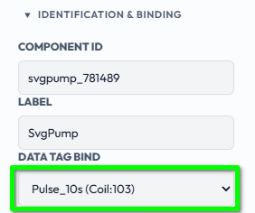
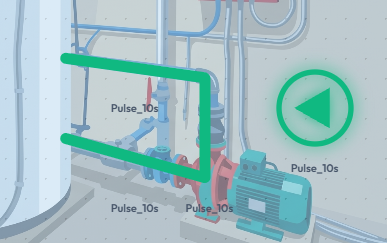
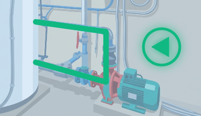

Goal
Draw a process on a screen using the built-in graphic objects: a pump and some pipework that follow your tags.
So far our screens have shown data: a gauge, a clock, a few links. A SCADA screen is usually also a picture of the plant: tanks, pumps, valves and the pipes between them, all changing colour as the process changes. In this chapter we meet the graphic objects built into the Toolbox. In the next chapter we bring in artwork of your own with the Symbol SVG widget.
Part 1: The Process & Symbols group
In the Toolbox, open the Process & Symbols group.

Feed Pump
Ready-made pump artwork, in four shapes.
Control Valve
Ready-made valve artwork, in four shapes.
Storage Tank
A tank that fills to show a level.
Line / Pipe
A straight line: pipework, signal lines, dividers.
Rectangle
Equipment outlines, panels, grouping areas.
Ellipse / Circle
Circles and ovals.
Polyline
A multi-segment open line, for complex pipe routes.
Polygon
A closed multi-segment shape.
Symbol SVG
Your own vector artwork (next chapter).
Image Widget
A photograph or raster picture (next chapter).
In this chapter we will use just a pump and some pipes as essential examples. The other built-in types (valve, tank, shapes) work in exactly the same manner, so what you learn here applies to all of them. All of them are drawn by Sentinel itself. They stay sharp at any size, and they change appearance with the value of the tag they are bound to.
Part 2: A pump
Drag a Feed Pump onto the canvas. No file is needed; the artwork is built in.

Each Feed Pump and Control Valve has a Shape property that swaps the artwork in place. Your tag binding, colours and size are kept when you change it, so you can try each shape on the same placed widget.
Feed Pump shapes
Pump (the default), Motor Pump, Centrifugal Blower and Box Fan.
Control Valve shapes
Gate Valve (the default), Globe Valve, Butterfly Damper and Air Damper.
Select the pump you just placed and let us review its key properties.

Orientation
Up, Down, Left or Right: turns the symbol in 90 degree steps. Pumps and valves default to Right, the left-to-right flow convention.
Flip Horizontal
Mirrors the artwork. Some equipment is a true mirror image rather than a rotation, a blower whose housing curls the other way, for example.
Active Color / Inactive Color
The colour the whole symbol takes in each state.
Allow Control Write
When on, clicking the symbol at runtime writes the opposite state to the bound tag, subject to the tag's Min Write Role.
Animate on Alarm
Flashes the symbol while its tag is in an alarm.
Width / Height
Size in pixels.
For example, here the pump's orientation has been changed to point Left.

Bind it to a tag
Bind the pump to a discrete (on/off) tag and it switches between Inactive and Active as the tag changes: stopped (grey) or running (green).
For brevity we will use one of the discrete tags provided as an example with the Modbus SIM device we added earlier: Pulse_10s. It alternates between 0 and 1 every 10 seconds, which gives us a handy animation to watch.

Not a drawing standard The built-in shapes are meant to be immediately usable, not an exact copy of any one real-world drawing standard. For an exact match to your plant's P&ID symbols, bring in your own artwork with Symbol SVG, which is the subject of the next chapter.
Part 3: Pipes
Using the same method we can quickly create any form of symbolic installation, for example to indicate the flow of hot water through a pipe. Pipework is drawn with the Line / Pipe widget, Polyline for routes with bends, and Rectangle, Ellipse and Polygon for equipment outlines.
Line / Pipe
Orientation can be Horizontal, Vertical, Diagonal Down or Diagonal Up. Line Thickness sets the pipe width.
Polyline
Click to add points, double-click to finish. Or edit the Points list (x,y x,y ...).
Rectangle
Corner Radius rounds the corners.
Ellipse
Circles and ovals.
Polygon
A closed shape from a list of points.

Colours
Default Color / Border Color / Default Fill
The normal look.
Active Color (1) / Inactive Color (0)
The colour when the bound tag is 1 or 0. The Inactive Color is grey by default, in the spirit of the ISA-101 approach of keeping bright colour for things that need attention.
Bind a pipe to a tag and its colour follows the process: for example green while a pump is running and grey when it is not. A thick Line / Pipe in a process colour makes good pipework on a P&ID-style screen.
Part 4: Try it in Run Mode
Switch to Run Mode from the View menu and the symbols take on their Active and Inactive colours as the tags change.

Summary
The Process & Symbols group holds the built-in pump, valve, tank, pipe and shape objects. They are drawn by Sentinel, stay sharp at any size and follow their bound tag.
Pumps and valves have several Shapes, Orientation and Flip; the tank shows a level with low and high alert colours; lines and shapes take Active and Inactive colours from a tag.
Changing a Shape keeps the binding, colours and size.
In this chapter we drew a pump and some pipework that follow a tag. In the next chapter we will bring in your own artwork with the Symbol SVG widget, and see how it differs from the Image widget.